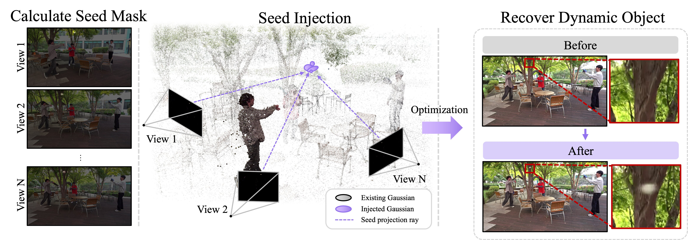

01SPACE
Seed Injection

A dynamic error-based seed map combines temporal intensity changes with reconstruction error. Sampled pixels are lifted through synchronized multi-view rays, producing geometrically plausible 3D seeds—even where no suitable Gaussian currently exists.